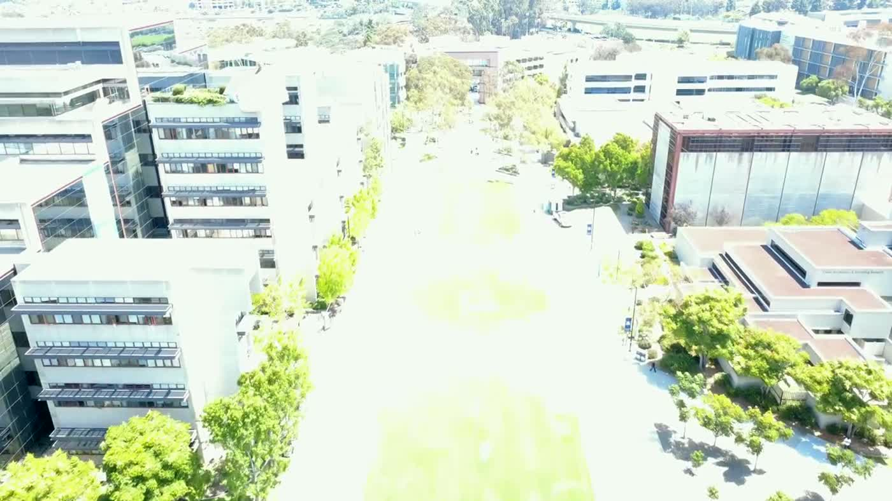

Autonomous drones deliver food relief to where San Diego's need is highest, guided by a live model of the streets and the drone's own eyes.

“In the next five years our food supply more than doubles, from 37 to nearly 90 million pounds. We have 146 volunteers, and we don’t see steady growth in the workforce.”
Feeding San Diego engineering lead · hackathon interview, Aug 2026
Twice the food, the same hands. The gap shows up at the last mile.
Drones carry food to priority drop sites, no driver required. This is a real flight over campus, Geisel Library to the Data Science building.
We take Data Science Alliance’s downtown street count and add signals: 311 requests, encampment enforcement, shelter capacity, paid-parking activity and annual PIT counts, then predict where visible need concentrates, month over month.
Backtested: 79% lower error than the naive baseline · output = ranked priority drop sites.
On arrival, EyePop counts how many people are actually waiting, faces blurred on-device. That real count feeds back into the model, so tomorrow’s forecast and tomorrow’s food load are sharper.